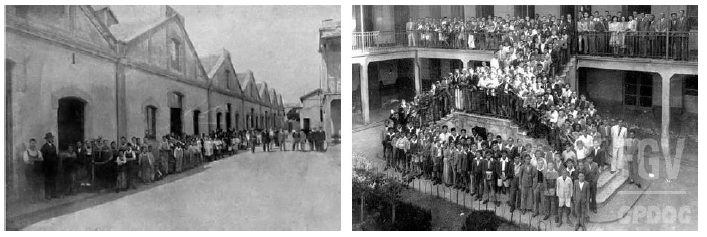

A história...

Ensino de nível Primário.
A Lei nº 378 propôs a expansão do ensino profissional no país, incluindo a criação de novos Liceus, tanto na rede pública quanto na privada.
O Ministério de Educação e Saúde foi criado por meio da lei nº 378, em 1937, juntamente com o Departamento Nacional da Educação, que era estruturado em oito divisões de ensino: primário, industrial, comercial, doméstico, secundário, superior, extraescolar e educação física. Durante esse período, a Divisão do Ensino Industrial foi implantada, e as Escolas de Aprendizes Artífices foram transformadas em Liceus, dedicados ao ensino profissional em diversos ramos e graus.
Consequentemente, a escola de São Paulo, conhecida como "Liceu Industrial de São Paulo", no período de 1937 a 1942, foi liderada por Glicério Rodrigues Filho e Francisco da Costa Guimarães (que já havia sido diretor quando era Escola de Aprendizes Artífices), sendo este último envolvido na transição em 1942.
Em 1937, ano da criação dos Liceus Industriais, o presidente Getúlio Vargas promulgou uma nova constituição e fechou o Congresso Nacional, instituindo o Estado Novo. Vargas buscou apoio popular, implementando leis trabalhistas e impulsionando a industrialização durante a Era Vargas, que perdurou até 1945.
Diretores
Os diretores durante esse período foram Glicério Rodrigues Filho e Francisco da Costa Guimarães.
Glicério Rodrigues Filho (Jan.1937 à Set.1939)
Francisco da Costa Guimarães (Set.1939 à Ago.1942)